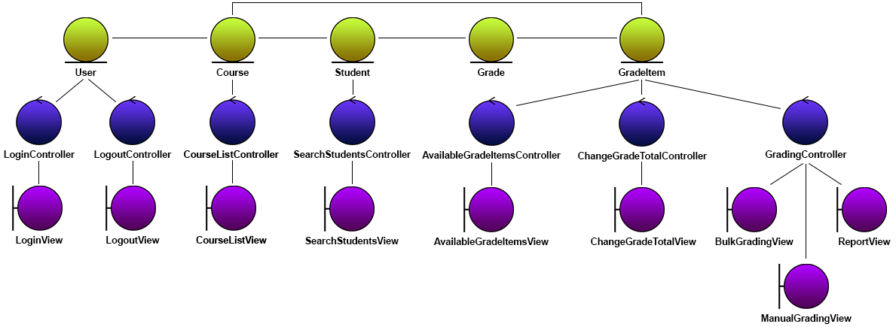

ezMarker - Analysis
Version 2.0 - In progress
Last updated: October 18, 2017
Table of Contents
Introduction
ezMarker is a web application that allows instructors at Wilfrid Laurier University to bulk upload grades and feedback into MyLearningSpace,with the integration of the Brightspace API supported by D2L. The goal of ezMarker is to solve the issues regarding inefficient manual grade uploading and and feedback through the current MyLearningSpace interface. On average, it can take markers a few hours to physically upload grades for one class. Marking time is cut down to minutes with the use of ezMarker's bulk file uploading features. This document outlines the structure of the classes and objects for the ezMarker application, including the software interaction summary.
Object Classification
Object Diagram

Entity Objects
- User - Stores information about logged in user.
- Course - Stores information about a course.
- Student - Stores information about a student.
- GradeItem - Stores information about a grade item. Implemented by specific grade item type.
- Grade - Stores information about a specific grade. Implemented by specific grade type.
Boundary Objects
- LoginView - Where user signs in with MLS credentials and receives Brightspace API token.
- LogoutView - Where user signs out.
- CourseListView - Where user gets a list of courses that they have permission to upload grades to.
- SearchStudentsView - Where user can search for students.
- AvailableGradeItemsView - Where user selects a grade item of a course that they have permission to upload grades to.
- ChangeGradeTotalView - Where user can change the grade total for a grade item.
- ManualGradingView - Where user can manually input grades for a set of students.
- BulkGradingView - Where user can upload a file for bulk grade submission.
- ReportView - Where user will be shown how many grades were successfully set and if any errors occurred.
Control Objects
- LoginController - Manages retrieval of Brightspace token and updating User object.
- LogoutController - Controls user signout and updating User object.
- CourseListController - Retrieval of Courses that the user has permission to upload grades to.
- SearchStudentsController - Searching of students by name or student ID.
- AvailableGradeItemsController - Retrieval of a course's GradeItems that the user has permission to upload grades to.
- ChangeGradeTotalController - Administer changing of the grade total of a grade item and updating GradeItem object.
- GradingController - Operate parsing, validating and uploading of students' grades and updating GradeItem object.
Class Diagram
Refer to the Section 3 of the analysis document for the Brightspace API Python Wrapper.
Revision History
Version 1.0 - 10/16/2017
Authors: Sumeet Jhand, Shuaib Reeyaz, Sarah Johnston
SQA: Harold Hodgins, Troy Nechanicky, Sophie Wang